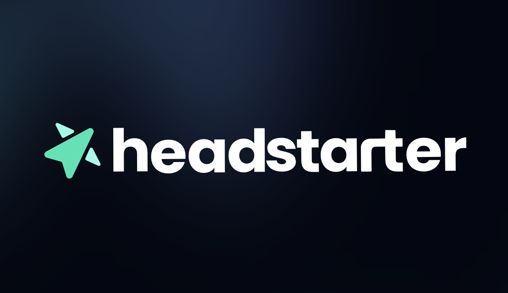
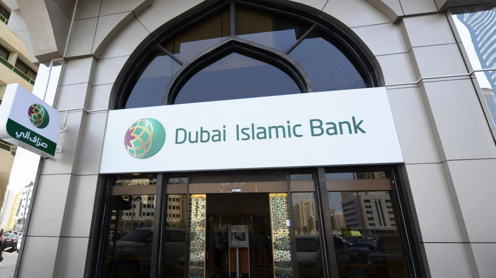
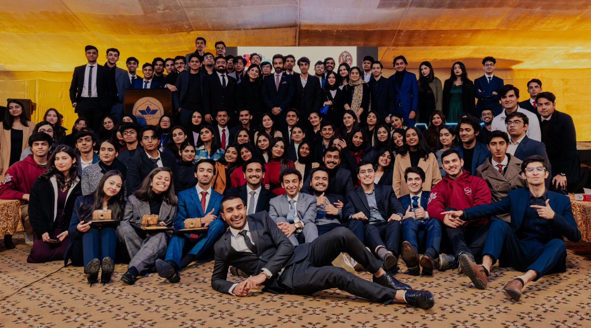

Software Engineering Fellow at Headstarter AI
I completed a 7-week fellowship at Headstarter AI as a Software Engineer, working on 5 AI projects as a team of four people. Through building these projects, I showcased my skills, while also acquiring new ones. This experience has been incredibly enriching, allowing me to develop innovative solutions, connect with experts in my field, and enhance my understanding of AI technologies. Additionally, I gained hands-on experience with cutting-edge tools, improved my problem-solving abilities, and learned to work effectively in a collaborative environment. Some of the highlights:
- Successfully cleared several mock coding interview rounds with 80% accuracy or more
- Built a personal website using html, css and javascript (yes, this one)

Digital Banking Intern at Dubai Islamic Bank Pakistan
I have completed a 6-week internship at Dubai Islamic Bank Pakistan in their Digital Banking department. This opportunity has been incredibly rewarding, providing me with valuable hands on experience and insights into the FinTech industry and the intricacies of digital financial services platforms.
During my internship, I had the privilege of working on several innovative projects aimed at expanding the bank's digital banking footprint, through extended products portfolio. These projects primarily focused on upscaling and modernization of the Bank’s digital delivery channels, handling more than 200,000 customers, through AI enablement:
- Optimizing the AI chatbot and improving it by adding more features
- Re-imagining the DIBPL website, and drafting a new, optimized version
- Exploring AI integration in the digital channels to improve customer satisfaction
- Making a new AI software that matches customers to services based on their need with a 90% positive feedback
- Exploring the usage of Machine Learning in Fraud Detection

Director Design at PhotoLUMS
During my three years at the LUMS Photographic Society, commonly known as PhotoLUMS, I have had the privilege of being an integral part of the Design Department. My journey began as a Team Member, progressed to Assistant Director, and eventually culminated in my role as Director.
This trajectory has provided me with a comprehensive and multifaceted experience in design, project management and leadership. I have also developed strong communication skills, allowing me to effectively convey ideas and collaborate with team members and stakeholders. Under my leadership:
- The Design Department achieved new heights, emerging as a leader in its category.
- Our designs were extensively used for outreach, marketing, and social media campaigns, resulting in 500,000 registrations for LAPS XI
- This strategic focus on quality and engagement led to a tenfold increase in our Instagram followers over three years
- We consistently produced some of the finest pieces of art, characterized by creativity, precision, innovation and deep understanding of visual aesthetics.